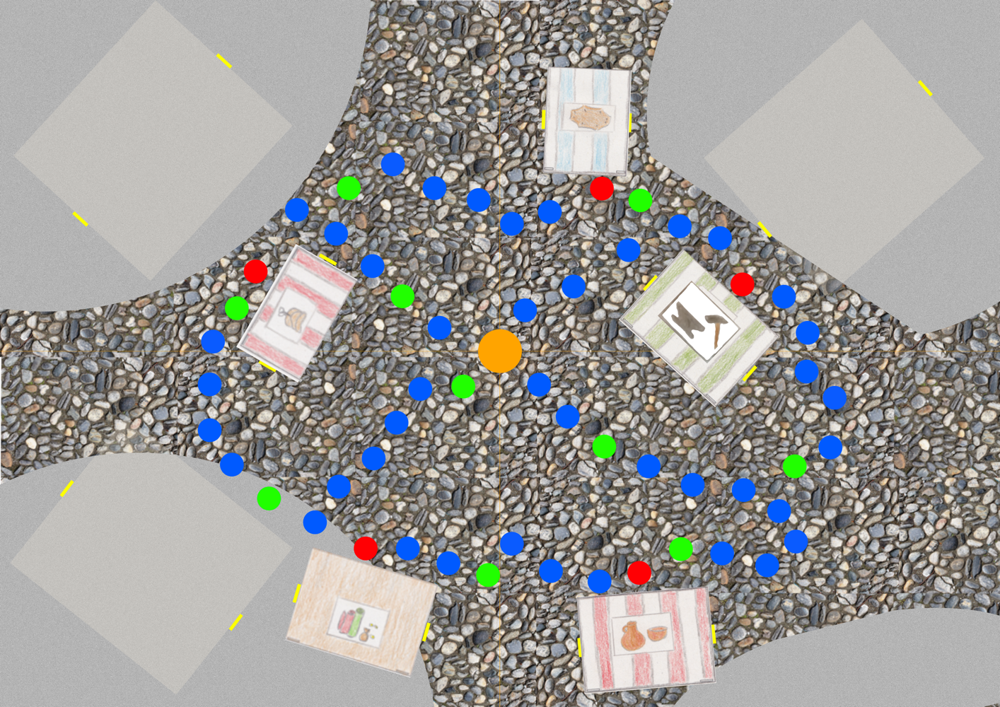
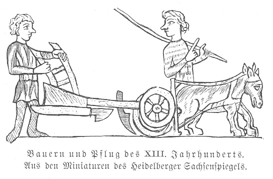
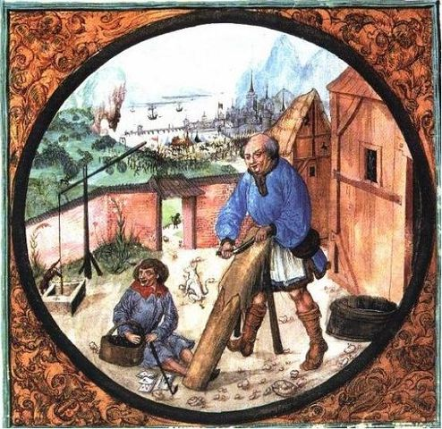

Spiel: Der spätmittelalterliche Markt
Ihr braucht:
- jeder eine Spielfigur
- einen Würfel
- einen Spielplan: * oder ** (*: 5 Berufe, **: 9 Berufe)
- ein Handy oder Tablett mit Internetzugang
- 4 Einkaufszettel
- Frage- und Ereigniskarten (?!)
- Fragen zu verschiedenen Berufen
Spielvorbereitung:
- Sortiert alle Karten mit dem gleichen Symbol auf je einen Stapel. Je nach dem für welchen Differenzierungsgrad * / ** ihr euch entschieden habt, habt ihr entweder 6 oder 10 Stapel.
- Steckt die Häuser und Marktstände zusammen und auf euer Spielbrett. In diesem Buch findet ihr einen Spielplan, der euch zeigt, wo welcher Stand hingehört.
- Stellt alle Spielfiguren auf den orangenen Spielstartpunkt.
- Jeder Spieler bekommt einen Einkaufszettel
Spielablauf:
Vor Begin des Spiels liest ein Mitspieler den Informationstext über den mittelalterlichen Markt sowie den kurzen Text über die Berufe (allgemeiner Berufstext) laut vor (oder lässt den Text digital vorlesen). Alle müssen gut zuhören, da während des Spiels Fragen zum Text auftauchen. Nun wird der Reihe nach gewürfelt.
Ziel ist es, alle Besorgungen auf euren Einkaufszettel zu erledigen und am schnellsten wieder zum Starpunkt zu gelangen. Dafür müsst ihr auf die roten Spezialfelder vor den Ständen gelangen und eine Frage zu diesem Beruf beantworten. Wenn ein Stand nicht auf eurem Einkaufszettel steht, müsst ihr zu diesem Beruf keine Frage beantworten.
Die Reihenfolge, mit der ihr die Stände besucht und die Laufrichtung könnt ihr in jeder Runde selbst bestimmen. Während eines Spielzuges darf sich die Richtung jedoch nicht ändern. Wenn ihr eine Frage zu eurem besuchten Berufsstand richtig beantwortet habt, könnt ihr diesen auf eurem Einkaufszettel abhaken. Beantwortet ihr die Frage jedoch falsch, sind eure Mitspieler an der Reihe. Erst in der nächsten Runde könnt ihr versuchen,eine weitere Frage zu beantworten.
WICHTIG: Um die Fragen zu beantworten könnt ihr die Informationstexte zu den jeweiligen Berufen lesen (oder euch vorlesen lassen). Um eure Antworten zu überprüfen, müsst ihr die Fragekarten aufklappen.
Achtung:
Die blauen Felder sind ganz normale Spielfelder. Gelangt ihr jedoch auf grüne Felder, so zieht ihr eine Frage-und Ereigniskarte (?!). Ihr müsst die euch gestellte Frage (zum Markt)oder die Aktion ausführen
Nach dem Spiel
Habt ihr das Spiel beendet und alle Mitspieler sind am Startpunkt angelangt, so beantwortet ihr danach die beiligenden Aufgaben. Die Informationen, die ihr im Spiel gesammelt habt, können euch dabei helfen.
Wichtig:
Lest alle Texte zum Markt und zu den Berufen sowie Fragen und Aufforderungen laut vor (oder lasst sie euch vorlesen)! So erfahren alle Spieler die wichtigen Informationen
Viel Spaß beim Spielen !
Bader 
Bauer 
Gerber 
Schmied 
Bäcker 
Schreiber 
Töpfer 
Fernkaufmann 
Sattler 
Beispiel Spielplan
Auf dieser Seite findet ihr zwei Spielpläne: Spielplan * und Spielplan **. Diese zeigen euch, wo ihr die einzelnen Marktstände platzieren müsst. Da alle unterschiedliche größen haben, haben sie einen bestimmten Platz.
Spielplan *

Spielplan **

Ein spätmittelalterlicher Markt
 Darstellung des "Marktplatzes von Halle um 1500", von unbekannt, Leipzig, 1889 erstellt
Darstellung des "Marktplatzes von Halle um 1500", von unbekannt, Leipzig, 1889 erstellt
Informationstext über den Markt
Der Markt war der Mittelpunkt vieler Städte. Auf den Marktplätzen fand der gesamte Handel statt. Der Markt war zudem oft ein Treffpunkt und eine Möglichkeit, dem Alltag des Mittelalters zu entfliehen: Gaukler (Sänger, Jongleure, Feuerschlucker ...) belustigten die Menschen. An verschiedenen Ständen konnten sich die Menschen mit benötigten Waren eindecken. Ein Markt ermöglichte es den Bürgern der Stadt und den Menschen aus dem Umland zudem, ihre Waren und Dienste anzubieten.
Es wurden nicht nur Grundnahrungsmittel angeboten, auch andere Produkte wie z.B.: Keramik-, Metall- oder Holzwaren. Auch Gewürze,Stoffe oder Wein wurden von Fernkaufmännern verkauft.
In einigen Städten gab es verschiedene Märkte, die auf unterschiedliche Waren spezialisiert waren. So gab es zum Beispiel einen Fischmarkt, einen Gewürzmarkt oder einen Gemüsemarkt. Einmal im Jahr fand ein Jahrmarkt statt.
Damit ein Markt funktionierte, gab es strenge Regeln, die von den Verkäufern und Käufern beachtet werden mussten: Zum einen war der Markt ein geschützter Bereich, auf dem ein Marktfrieden herrschte. Zum anderen waren die Maße der Waren, wie z.B.: Länge von Stoffen,oder Gewicht und Preise von Brötchen festgeschrieben. Sie wurden von einem Marktaufseher kontrolliert.
Bezahlt wurde im Spätmittelalter mit Münzen. Es gab jedoch keine einheitliche Währung. Viele Städte besaßen neben dem Recht einen Markt abzuhalten, dem Marktrecht, ein Münzrecht. Sie konnten also eigene Münzen herstellen. So entstanden viele unterschiedliche Währungen. Mit Hilfe von einer Münzwaage wurde auf einem Markt das Gewicht der Münzen und so der Wert ermittelt.
Ein Marktplatz wurde nicht nur genutzt, um mit Waren zu handeln, oder sich an den Gauklern, Jongleuren, Artisten und Sängern an Markttagen zu erfreuen, es wurden auch Bürgerversammlungen abgehalten, Feste gefeiert und Ratsbeschlüsse verkündet. Deshalb wurden an Marktplätzen oft Rathäuser gebaut. Auch wohlhabende Bürger, wie z.B.: Kaufleute bauten dort ihre Häuser. Oft waren es mehrgeschossige Fachwerkhäuser. Einige der Häuser hatten ein gemauertes Erdgeschoss. Dadurch wurden die Wände vor Feuchtigkeit geschützt. Mit einem Rollenaufzug, der an einem herausragenden Balken befestigt war, konnten die Kaufleute ihre Waren in das Dachgeschoss transportieren und dort lagern. In manchen Städten gab es im Spätmittelalter auch Markthäuser. In ihnen konnte ebenfalls etwas gelagert und verkauft werden.
Der Marktplatz musste gut erreichbar sein. Deswegen führten die wichtigsten Straßen einer Stadt zum Markt.
Berufe des Mittelalters
In den Städten des Mittelalters arbeiteten zahlreiche Handwerker wie die Bäcker, Weber, Töpfer, Mauerer, Zimmerleute, Schmiede und viele mehr. Die Vielfalt der Berufe ist mit dieser Aufzählung nicht annähernd ausgeschöpft.
Allerdings gab es nicht nur viele Handwerker, sondern auch viele Dienstleister (Bader, Boten, Fuhrleute, Schreiber, ...)
Die Handwerksberufe waren im Spätmittelalter noch zu Zünften zusammengeschossen um gemeinsame Interessen zu vertreten und zu wahren. An der Spitze einer Zunft standen die Zunftmeister. In einem schriftlich abgefassten Gesetzt, der Zunftordnung, waren Rechte und Pflichten der Zunftmitglieder festgehalten.
Viele Berufe des Mittelalters sind heute nicht mehr bekannt. Dazu zählen unter anderem der Pergamenter, der Sarwürker (Kettenhemdmacher) oder der Blechhandschuhmacher.
Bader
Die Bader betrieben die Badehäuser des Mittelalters. Familien, die in ihren Häusern nicht die Möglichkeit hatten, zu baden, besuchten alle ein bis zwei Wochen ein Badehaus. Im Spätmittelalter ermöglichte das Baden in Badehäusern Geselligkeit und Abwechslung vom Alltag. Es gab keine Geschlechtertrennung. Die Gäste wurden mit Speisen und Getränken versorgt.
Die Bader boten oft zusätzliche Dienstleistungen an, wie das Schneiden von Haaren und Nägeln oder aber auch Wundbehandlungen. Sie waren also auch medizinisch tätig. Badeknechte halfen bei medizinischen Tätigkeiten während Bademärkte die Gäste bedienten.
In Badehäusern bestand häufig die Gefahr, sich mit Krankheiten anzustecken.
Die Badestuben waren aufgrund hoher Brandgefahr aus Stein und befanden sich am Markt.
Auf dem Bild sieht man einen Bader, der seinen Gast mit Hilfe von Schröpfbechern medizinisch behandelt.

"der Bader", Stich von Jost Amman,aus "Das Ständebuch. Herscher, Handwerker und Künstler des Mittelalters", 1568
Bildquelle: https://commons.wikimedia.org/wiki/File:Bader.jpg,gesehen am 01.03.2018 um 16:46 Uhr
Die Bauern
Das Leben der Bauern im Mittelalter war sehr hart. Viele von ihnen waren sogenannte Hörige (Unfreie): An einen Großgrundbesitzer mussten sie einen großen Teil der Ernte abgeben und auf dem Hof des Großgrundbesitzer mussten sie Arbeitsleistungen verrichten.
Im Spätmittelalter gingen deshalb viele Bauern in die Stadt, um dort ein neues Leben anzufangen. Lebten sie ein Jahr und einen Tag in der Stadt ohne vom Großgrundbesitzer zurück geholt zu werden, waren sie frei und erlangten das Bürgerrecht.
Auf Märkten verkauften Bauern ihre Nahrungsmittel und versorgten so einen Großteil der Bevölkerung. Sie selbst konnten sich mit Waren der städtischen Handwerker eindecken und die benötigten Waren für das Leben auf dem Land kaufen

Darstellung von Bauern des 13. Jahrhunderts mit Pflug, veröffentlich im Heidelberger Sachsenspiegel
Bildquelle: https://commons.wikimedia.org/wiki/File:Bauern_pflug.jpg, gesehen am 17.03.2018 um 17:11 Uhr
Die Gerber
Die Gerber stellten aus Tierhäuten Leder her. Dafür mussten sie die Tierhaut waschen und so von Fleischresten und ähnlichem befreien. Anschließend wurden die Tierhäute mit Hilfe von Rinde gegerbt (chemische Prozesse) und so wasserabweisend, widerstandsfähig und gleichzeitig geschmeidig gemacht. Nach dem Trocknen des Leders wurde es in handelsübliche Formate geschnitten und konnte nun auf dem Markt weiter verkauft werden.
Der Prozess des Gerbens war sehr zeitaufwendig und dauerte mehrere Wochen. Außerdem ist nasses Leder sehr schwer, sodass Gerben Schwerstarbeit war.
Leder war Ausgangsstoff für viele andere Produkte.
Die Gerber benötigten für ihre Arbeit fließendes Wasser. Wegen der Geruchsintensität wurden die Gerber oft außerhalb des Stadtzentrums und damit außerhalb der Märkte angesiedelt. Die Waren mussten sie zum Verkauf zum Markt transportieren.
Auf dem Bild bearbeitet ein Gerber eine Tierhaut,die er auf einen Holzbalken, dem Scherbaum gelegt hat.

"Gerber", Balthasar-Behem-Codex, ca.1505
Bildquelle: https://de.wikipedia.org/wiki/Gerben#/media/File:Balthasar_Behem_Codex_Tanner.jpg, gesehen am 01.03.2018 um 17:09 Uhr
Der Schmied
Im Mittelalter gab es viele verschiedene Schmiede.
Der Kleinschmied (auch Schlosser) genannt, stellte verschiedene Schlösser her.
Gold- und Silberschmiede bearbeiteten ihre Edelmetalle für Schmuck, kirchliche Gegenstände und Tafelgeschirr. Vor allem Goldschmiede waren im Spätmittelalter angesehene Handwerker. Sie besaßen eigene Häuser und hatten oft einen Vertreter im städtischen Rat. (Der Rat legte Gesetze fest. Er bestand aus Vertretern der Oberschicht).
Kupferschmiede stellten verschiedene Waren her: Becher, Besteck, Geschirr und anderes.
Im Spätmittelalter gab es auch Waffenschmiede, die Waffen herstellten sowie Hufschmiede. Diese waren jedoch hauptsächlich auf dem Land vertreten.

Darstellung eines mittelalterlichen Schmieds, von Jost Amman, Frankfurt a.M, 1568
Bildquelle: hhttps://commons.wikimedia.org/wiki/File:Schmidt-1568.png, gesehen am 17.03.2018 um 17:18 Uhr
Bäcker
Brot gehörte im Mittelalter zu den wichtigsten Grundnahrungsmitteln. Deshalb gehörten die Bäcker zu den am stärksten vertretenen Handwerkern.
In großen Städten spezialisierten sich die Bäcker. So gab es Schwarz- und Weißbrotbäcker, Pfefferkuchen-, Brezel- oder Zuckerbäcker.
Gewicht, Preis und Qualität von Broten wurde im Spätmittelalter streng kontrolliert und festgeschrieben.
Auf dem Markt verkauften die Frauen der Bäcker und Dienstmägde die Backwaren. In sogenannten Backstuben wurde der Verkauf jedoch von den Männern getätigt.
Auf dem Bild schiebt ein Bäcker Brot in seinen Ofen.

Calendar from a book of hours: the month of December, von anonym, um 1490-1500
Bildquelle:https://commons.wikimedia.org/wiki/File:Bakermiddleages.jpg, gesehen am 02.03.2018 um 09:57 Uhr
Schreiber
Im Mittelalter konnten viele Menschen nicht schreiben.
Die Schreiber des Mittelalters waren häufig Kaufleute oder ihr gehobenes Personal. Sie nutzten aus getrockneten Tierhäuten hergestelltes Pergament für Urkunden oder Papier,um Schriftstücke oder Abschriften aufzusetzen. Zum Schreiben nutzten sie Federn, welche sie mit Messern anspitzen konnten. Ihre Tinte stellten sie zumeist selbst her.
Einige Schreiber arbeiteten offiziell für ihre Stadt und bekamen Geld für Abschriften, Urkunden, Briefe und Ähnlichem. Sie wurden Stuhl- oder Berufsschreiber genannt.
Manche Schreiber trugen die Bezeichnung Schreib- oder Rechenmeister. In Privatschulen unterrichteten sie die Kinder von Kaufleuten und anderen Handwerkern in den Grundfertigkeiten: Lesen, Schreiben sowie Rechnen.
Auf dem Bild ist ein Schreiber mit diversen Materialien dargestellt.

"Portrait von Jean Miélot", von Jean Le Tavernier, nach 1456
Bildquelle:https://commons.wikimedia.org/wiki/File:Escribano.jpg
Der Töpfer
Mit Hilfe von Ton, zur Not nutze man auch Lehm, und Wasser erschufen Töpfer im Mittelalter Gebrauchsgefäße, sogenannte Irdenware. Deshalb wurden Töpferwerkstätten häufig dort gebaut, wo viel Ton und wenn möglich, ein nahgelegener Fluss vorhanden waren.
Töpfer bauten ihren benötigten Ton in der Regel selbst ab und lagerten den dann im Freien, sodass Regen und Wind den Ton von Schmutz befreien konnten.
Für die Herstellung der Gefäße nutzen die Töpfer dann einfache Werkzeuge aus Holz oder Knochen sowie Messer. Mit Wasser machten sie den Ton und ihre Hände zum Arbeiten geschmeidig. Ein wichtiges Hilfsmittel im Spätmittelalter war die fußbetriebene Töpferscheibe, welche sich schnell drehte. Damit wurden die Waren gleichmäßg.
Nach dem Formen wurde die Waren bei etwa 800°-1200° gebrannt und so haltbarer gemacht. Ganz selten wurden die Gefäße dann anschließend glasiert, sodass sie unempfindlich gegen Wasser wurden.
Der Fernkaufmann
Gehandelt wurde schon immer. Jedoch war es aufgrund unbefestigter Straßen sehr mühsam. Oft wurden Handelskarren auch überfallen. Mit der Entstehung der Städte entwickelte sich auch das Handelsaufkommen weiter. Die Bürger der Stadt konnten nicht mehr allein von den Lebensmitteln der unmittelbaren Umgebung versorgt werden. Außerdem stellten sie höhere Ansprüche an die Qualität der Waren. Deshalb wurden nun vermehrt Waren aus europäischen und orientalischen Ländern von Kaufleuten herangeschafft.
Mit Fuhrwerken oder Schiffen wurden Gewürze wie Zucker, Salz und Curry, aber auch Rohstoffe wie Metall, Holz oder Waffen, Tücher, Seide und Pelze transportiert.
Da ab dem 13. Jahrhundert der Handel immer weiter aufkam, und nun das richtige Organisieren der Geschäfte bedeutend wurde, erforderte es von den Kaufleuten lesen, schreiben und rechnen zu können. So konnten sie Geschäftsbücher führen oder wichtige Geschäftsbriefe verfassen.
In einigen Städten schlossen sich die Kaufleute zu Genossenschaften zusammen. Die bekannteste ist wohl die Hanse (ein Zusammenschluss einiger norddeutscher und nordischer Städte).
Der Sattler
Um ihren Beruf auszuführen, benötigten die Sattler Leder, welches sie von Gerbern beziehen konnten. Mit Hilfe des Leders stellte der Sattler dann Sättel und Geschirr zum Anspannen von Pferden her. Sattel und Geschirr mussten den Pferden genau angepasst werden, damit keine Druckstellen entstanden. Deswegen war der Beruf sehr aufwendig.
Zum Arbeiten nutzten die Sattler verschiedene Schneid- und Nähwerkzeuge. Mit einer Sattelzange wurde das Leder eingespannt, sodass der Sattler beide Hände zum Arbeiten frei hatte.
Hauptsächlich arbeiteten Sattler in der Stadt, doch gingen sie auch auf die Stör. Das bedeutet, sie zogen mit ihrem Werkzeug über das Land und von Kunde zu Kunde und erledigten dort ihre Arbeit.
Auf dem Bild ist ein Sattler dargestellt, welcher einen Kummet herstellt. Kummets werden den Pferden um den Hals gelegt, um dort das Geschirr zu befestigen.

"Der Sattler", Holzschnitt von Jost Amman, 1568